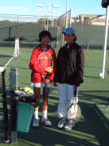
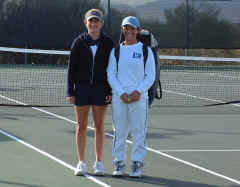
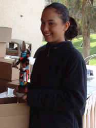
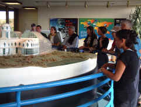
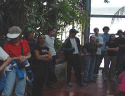
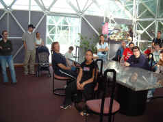

 |
|
Lauren and Liz. |
We
slipped from under the covers before the sun came up so Liz
could warm up for her playoff for fifth or sixth place in The
Copper Bowl 14s. This morning she warmed up with Lauren Lui
from Texas, who is in the finals of the round of 16 playoffs.
 |
|
Plukas
and Liz after the match. |
Alexis Plukas was Lizzie's
opponent in the battle for fifth place. Liz had beaten Plukas
in a close three-setter at the National Hard Courts last
month, so the older Plukas was out for some revenge. Plukas
got out of the gate very quickly with a love game for a 1-0
lead, but Liz got right back in the match with some strong
shot-making. Liz played a very solid first set and won 6-3.
The second set was much like the first. Plukas hit her share
of winners, but Liz controlled the points with an intelligent
mix of shots. Slices and drop-shots were effective against
Plukas and Liz controlled the flow of the match. Plukas
managed her share of winners, but Liz prevailed 6-4 for a
straight set victory and the fifth place Kuchina Doll trophy.
The trophies are each hand made by local native Americans.
|
 |
|
Liz
poses with her Kuchina trophy. |
That's All Folks!
|
|
Packing
up at the condo was a light-hearted chore after Lizzie's
success in Arizona. We are leaving for Vegas this evening for
a few days in sin city. For our gourmet friends, they will be
delighted to note that our lunch consisted of leftover salad
and frozen pizza. No wine was within drinking distance. Since
we had a few hours before checking in at the airport, we
decided to head to Biosphere 2, the largest greenhouse in the
world. The experimental compound is now run by Columbia
University and was built by the Bass Brothers of Houston as a
project to monitor human behavior in an enclosed. controlled
environment. In the late eighties a group of eight
participants spent two consecutive years in the Biosphere.
|
 |
|
Liz
looks at the Biosphere model at the beginning of the
afternoon tour. |
I
can't even imagine what it was like to spend two years
confined within the habitats of the Biosphere? We spent two
hours touring the place and it seemed like an eternity. We did
not actually enter any of the habitats within the Biosphere,
but we roamed through the living quarters where the project
participants lived. The project was repeated for one six month
cycle several years ago, but the primary function of the
Biosphere project now focuses on how changes in the atmosphere
affect plant life and in return affect the atmosphere.

Listening to
a lecture of humidity.
Before
heading into the main Biosphere, we visited several
mini-habitats. Humid! We moved quickly through the flora and
dodged some drops of humidity.
|
 |
|
A
marble dinner table inside the Biosphere 2. |
Well, anyway, we're in Las Vegas now
staying in the lap of luxury at The Bellagio Hotel. Alex was
here awaiting our arrival and we had a fabulous dinner at
Lutece at the Venetian Hotel. The room is an architectural
gem, though some of the spiral designs put Lizzie in a
slight tizzy until she changed her seat. There are three
smiling Kobaks pictured below at the Bellagio garden courtyard
before breakfast the next morning. The less said the better
about the quality of Bellagio's breakfast.
|